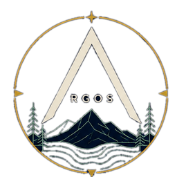
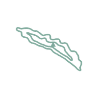
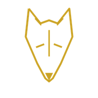

ARGOS : : Kefalonia Digital Twin
Explore the island's geography, infrastructure and environmental risk using open data.

ARGOS : :
Kefalonia Digital Twin
The map that argues back



Watching over the places we call home.
v0.0.3 vector preview
EN
ΕΛ
Layers
Roads
Trails
Buildings
Beaches
POIs
Municipalities
Risk
Wildfire risk
i
Flood risk
i
Fire coverage
i
Legend
primary / secondary
tertiary
local / service
track / path · trail
beach
POI
buildings (zoom 12+)
Click any feature for its ARGOS attributes (fire/Port travel times live in buildings & POIs).
argos-geo.org
·
GitHub
✕
Ask the twin · v0.1.0 demo
Which buildings are more than 15 min from fire response?
How many accommodations sit within 1 km of each named beach?
Which named beaches lack a paved road within 500 m?
Fiskardo → nearest port: how long, and which route?
Pre-wired questions, real PostGIS + pgRouting underneath. It pretends to be smart, honestly.
✕ Clear
☰
Ask the twin
✕
Wildfire risk
wildfire: moderate
wildfire: high
wildfire: very high
Flood risk
flood: moderate
flood: high
flood: very high
Fire coverage
beyond 15-min fire response
Legend
Home
Pota_Irtes local time
·
--:--